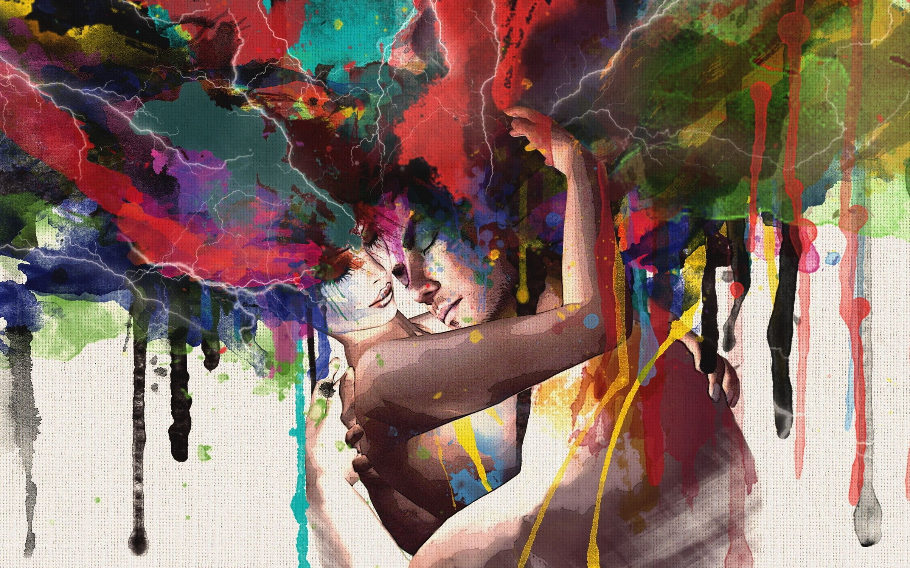

Getting started with HTML & CSS

Art, also called (to distinguish it from other art forms) visual art, a visual object or
experience consciously created through an expression of skill or imagination. The term art
encompasses diverse media such as painting, sculpture, printmaking, drawing, decorative arts,
photography, and installation.
The various visual arts exist within a continuum that ranges from purely aesthetic purposes at one
end to purely utilitarian purposes at the other. Such a polarity of purpose is reflected in the
commonly used terms artist and artisan, the latter understood as one who gives considerable attention
to the utilitarian. This should by no means be taken as a rigid scheme, however. Even within one form
of art, motives may vary widely; thus a potter or a weaver may create a highly functional work that is
at the same time beautiful—a salad bowl, for example, or a blanket—or may create works that have no
purpose beyond being admired. In cultures such as those of Africa and Oceania, a definition of art that
encompasses this continuum has existed for centuries. In the West, however, by the mid-18th century
the development of academies for painting and sculpture established a sense that these media were
“art” and therefore separate from more utilitarian media. This separation of art forms continued
among art institutions until the late 20th century, when such rigid distinctions began to be
questioned.
MONALISA
Giorgio de Chirico
Giorgio de Chirico, (born July 10, 1888, Vólos, Greece—died
Nov. 19, 1978, Rome, Italy), Italian painter who, with
Carlo Carrà and Giorgio Morandi, founded the style of
Metaphysical painting.
The Soothsayer's Recompense, oil on canvas by Giorgio de Chirico, 1913; in the Philadelphia Museum of Art.
After studying art in Athens and Florence, de Chirico moved to Germany in
1906 and entered the Munich Academy of Fine Arts. His early style was influenced by Arnold
Böcklin’s and Max Klinger’s paintings, which juxtapose the fantastic with the commonplace.
By 1910 de Chirico was living in Florence, where he began painting a unique series of landscapes
that included The Enigma of an Autumn Afternoon (1910), in which the long, sinister, and illogical
shadows cast by unseen objects onto empty city spaces contrast starkly with bright, clear light
that is rendered in brooding green tonalities. Moving to Paris in 1911, de Chirico gained the
admiration of Pablo Picasso and Guillaume Apollinaire with his ambiguously ominous scenes of
deserted piazzas. In these works, such as The Soothsayer’s Recompense (1913) and The Mystery
and Melancholy of a Street (1914), classical statues, dark arcades, and small, isolated
figures are overpowered by their own shadows and by severe, oppressive architecture.
- Leonardo da Vinci (1452–1519)
- Michelangelo (1475–1564)
- Raphael (1482–1520)
Not only did Leonardo da Vinci experiment with mediums, but he also innovated different
ways of creating striking compositions. In fact, his signature triangular composition is
still used today and is widely considered one of the most visually pleasing painting
layouts. He was also an early advocate of studying anatomical models to perfect his art,
something that was illegal at the time.